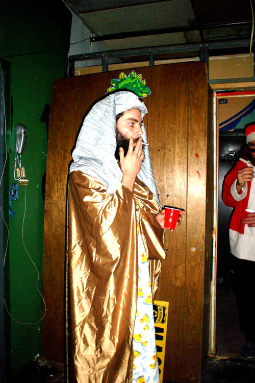

Howard Kleger

Unauthorized Information Center
This cache serves as an unauthorized information center on Howard Kleger, a Philadelphian man-of-ideas and significant figure for the Philadelphia Institute for Advanced Study.
Howard is a friend and collaborator. This archive attempts to do justice to his methods, projects, products, and ideas, albeit without his rigorous oversight.